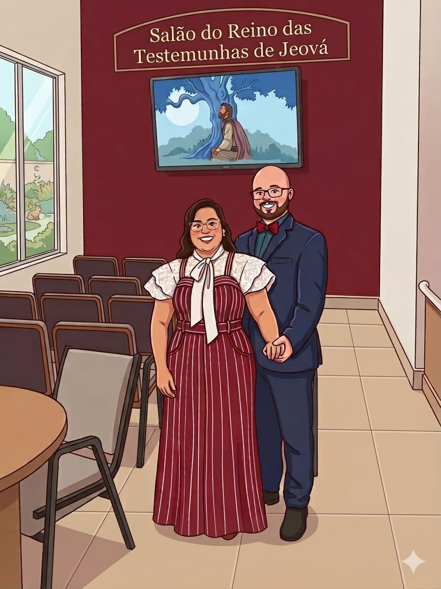

✨ Bem-vindo ao Dia do Missionário! Welcome to Missionary Day! • Congregação Itaperuçu — Paraná, Brasil! ✨ ✨ Bem-vindo ao Dia do Missionário! Welcome to Missionary Day! • Congregação Itaperuçu — Paraná, Brasil! ✨

Bem-vindo ao Dia do Missionário
Welcome to Missionary Day
Congregação Itaperuçu — Paraná, Brasil
Itaperuçu Congregation — Paraná, Brazil
Queridos irmãos e irmãs, é uma alegria imensa poder receber cada um de vocês neste dia tão especial! Que este período de convivência e aprendizado seja ricamente abençoado pelo nosso amoroso Pai, Jeová e fortaleça ainda mais o nosso amor e união fraternal.
Filipenses 2:2 "Se há, pois, algum encorajamento em Cristo, algum consolo de amor, algum companheirismo espiritual, algum terno sentimento e compaixão, Tornem plena a minha alegria por terem o mesmo modo de pensar e o mesmo amor, sendo plenamente unidos, tendo o mesmo pensamento".
Preparamos esta lembrancinha doce com muito carinho para adoçar o seu dia. Sejam muito bem-vindos!
Dear brothers and sisters, it is a great joy to welcome each one of you on this very special day! May this time of fellowship and learning be richly blessed by our loving Father, Jehovah, and may it further strengthen our love and brotherly unity.
Philippians 2:2 "If, then, there is any encouragement in Christ, if any consolation of love, if any spiritual fellowship, if any tender affection and compassion, make my joy full by being of the same mind and having the same love, being completely united, having the one thought in mind."
We have prepared this sweet treat with much affection to brighten your day. A very warm welcome to you all!
📋 Composição do Alfajor / Alfajor Composition
Massa: Biscoito doce tipo Maria/Maizena (farinha de trigo enriquecida com ferro e ácido fólico, açúcar, gordura vegetal, amido de milho, soro de leite, sal).
Recheio: Doce de soro de leite composto (soro de leite, açúcar, glicose e amido modificado).